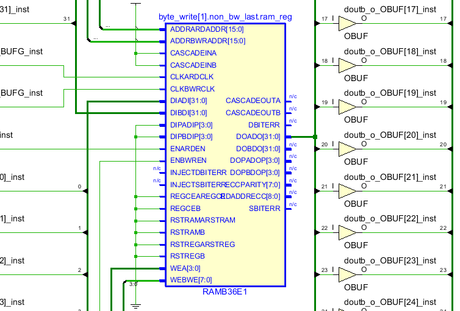
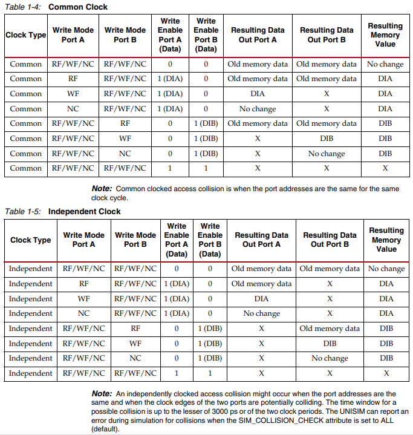

gnrc_true_dpram
Ture dual-port RAM.
This can be sythesis as BlockRAM primitive automatically in FPGA.
Parameters
parameter |
datatype |
range |
description |
|---|---|---|---|
DW |
int(default) |
>=1 |
Data bit width |
DP |
int(default) |
>=1 |
RAM depth |
DELAY |
int(default) |
>=1 |
RAM delay for simulation, It’s recommended set DELAY = 1 in synthesis, otherwise a DFF chain of (DELAY-1) length will be implement between BRAM and dout |
OP_MODE |
int(default) |
{0,1,2} |
Operationg Mode, 0 for Write-First, 1 for Read-First, 2 for No-Change. ONLY support Read-First when BYTE_WRITE enable |
BYTE_WRITE |
int(default) |
{0,1} |
Set 1 to enable byte write |
INIT_BY_ZERO |
int(default) |
{0,1} |
Set 1 to initialize ram by zero |
INIT_BY_FILE |
int(default) |
file path |
Initialize ram by a hex file, the initial value can also be downloaded to FPGA. Leave this empty to disable. |
AW |
int(default) |
$clog2(DP) |
Address bit width (auto-gen, do NOT change) |
MW |
int(default) |
$ceil(DW/8) if BYTE_WRITE, 1 otherwise |
Write enable bit width (auto-gen, do NOT change) |
IOs
signal |
I/O |
width |
description |
|---|---|---|---|
clka_i |
input |
logic |
port A clock input |
dina_i |
input |
logic [DW-1:0] |
port A data input |
ena_i |
input |
logic |
port A enable input |
wea_i |
input |
logic [MW-1:0] |
port A write enable input |
addra_i |
input |
logic [AW-1:0] |
port A read/write address input |
douta_o |
output |
logic [DW-1:0] |
port A data output |
clkb_i |
input |
logic |
port B clock input |
dinb_i |
input |
logic [DW-1:0] |
port B data input |
enb_i |
input |
logic |
port B enable input |
web_i |
input |
logic [MW-1:0] |
port B write enable input |
addrb_i |
input |
logic [AW-1:0] |
port B read/write address input |
doutb_o |
output |
logic [DW-1:0] |
port B data output |
Primitive
gnrc_true_dpram根据Xilinx RAMB36原语的功能进行的编写，其功能是RAMB36的一个子集，满足大多数场景下使用parameter例化RAM的需求，比使用IP Catalog或者直接使用原语更方便一些。
gnrc_true_dpram可以被自动识别为RAMB36 IP。
OP_MODE
每个端口有3种操作模式：
Write first
Read first
No change
操作模式会决定单个RAM端口在进行写数据操作时，输出数据的内容。
- Write first
写操作对应的输出为该地址被写入的数据（透传）。
- Read first
写操作对应的输出为该地址写入前的数据（一定程度避免丢数，但增加功耗）。
- No change
写操作对应的输出会保持上个时钟周期的数值。
Collision
双口RAM同时对同一地址进行访问将造成冲突。
发生冲突时导致的RAM的输出和存储内容改变情况如下表所示 [1]
